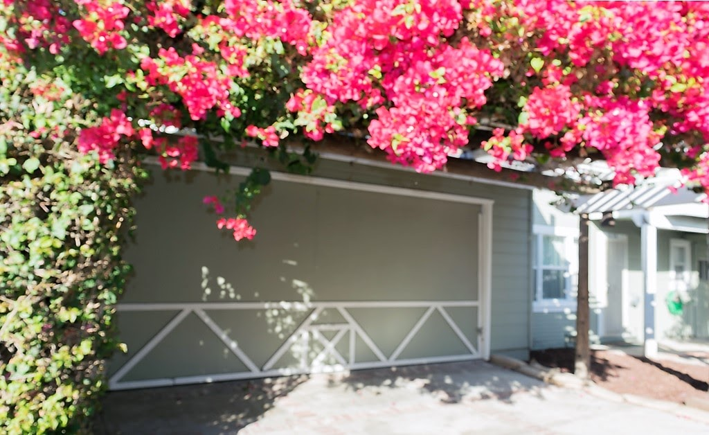
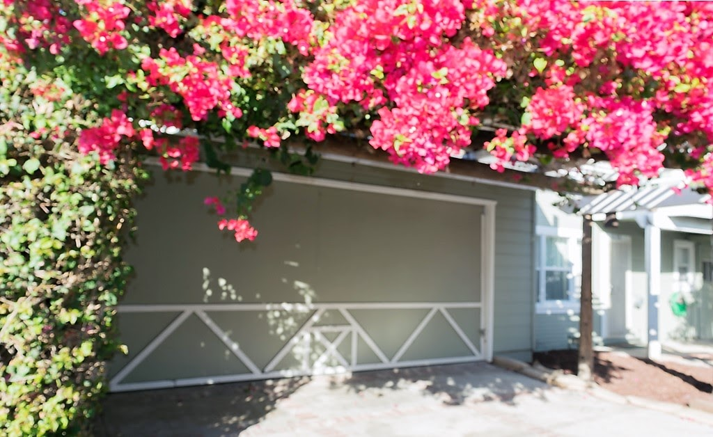

HOUSE RULES
HOUSE RULESCOVID -19 RESPONSE

We have taken additional measures to make our cleaning and disinfectant procedures more rigorous. Our cleaning staff has received enhanced operation protocols such as making sure all high touch surfaces (knobs, light switches, counter tops, handles, desks, toilets, faucets, sinks etc) are cleaned first and then disinfected. For the record, we are following the CDC guidelines for cleaning and disinfecting spaces.
CHECK-IN/CHECK-OUT TIMES
CHECK IN TIME: 3:00 -10:00 PM
CHECK OUT TIME: 11:00 AM
Just a quick reminder that check-in is anytime between 3 PM and 10 PM and check-out is by 11 AM. Unfortunately, we may not be available to assist you if you are checking in after 10 PM.
Summer
Early or Late Check In Request: *IMPORTANT*: As much as I would love to accommodate every guest that asks for an earlier check in, it is very difficult for us to make exceptions. Often times we have back-to-back bookings and our housekeepers need sufficient time to deep clean the unit. Early check-in would only be possible if we don’t have guests leaving on the day of your arrival (please send us a text via the app on the day of your arrival by 11:00 AM, and we will let you know). If you want to guarantee early check-in/late check-out, we recommend booking those open dates on either side of your stay, if available. Lastly, we don’t have a place for luggage storage, unfortunately.
PARKING
You may park in the garage or the private driveway. There will be a keys located on the office desk. We do not provide keys to the front door.
 

WI-FI ACCESS
Wi-Fi Network: MySpectrumWiFiAC-2G/5G
Password: rocketbasket713
HOUSE RULES
These house rules have been prepared with you in mind, so please read them in their entirety. My goal is to ensure that you can fully enjoy your stay while also respecting the home and its neighbors.
NO SMOKING - Please remember that the apartment and the entire property is NO SMOKING.
(We have external cameras). Smoking in the apartment may result in a forfeiture of all or
some of your deposit.
NO PETS
NO PARTIES OR EVENTS
NO ILLICIT ACTIVITY
NO LOUD MUSIC OR DISTURBANCE, especially after 9PM
UNAUTHORIZED GUEST - I do not allow unauthorized guests to sleep here unless
previously agreed upon when you booked the rental.
CHECK IN - Our check in hours are from 3PM Until 10PM. However, if you are checking in
late (after 10PM) please be mindful of the noise. This is our home and we do have neighbors.
The same rules apply if you are checking out early (before 8AM).
CHECK OUT - The cleaners will come promptly at 11AM to prepare for the next guest.
Please sign our guest book, lock the doors and LEAVE KEYS INSIDE LOCK BOX. You may also empty
your trash and/or recyclables in any one of the bins. Have a safe journey home!
BROKEN ITEMS - If for any reason you break an item during your stay, please let me
know. I understand that accidents happen, but in order for me to fix or replace something for
a future guest to enjoy, I will need to know that it is broken. I appreciate your honesty.
KEYS - Lost or misplaced KEYS will cost you $100. Please return keys to lock box.
LINENS/TOWELS - Please be respectful of bed sheets and towels. Makeup/foundation, face
medications/creams, and tanning products will stain the towels and linens. Beige or gray
towels are provided in each bathroom for removal of these products. Guest will be held
responsible for linens or towels that cannot be salvaged. Place all used towels on the
bathroom floor.
MISHAPS/CLEANING SUPPLIES - If you have any mishaps, there are cleaning supplies under
the kitchen sink. All food and drink spills need to be cleaned up immediately. Spills on
floors and or furnishings are considered to be damage beyond normal wear and tear. If the
mishap needs our attention please alert us immediately so the situation can be resolved.
LINENS - Leave any bed you’ve used unmade with covers pulled down- we’ll take care of
the linens.
DISHES - We take care of all the dishes. Just return them to the kitchen.
TRASH DISPOSAL - You will find trash bags under the kitchen sink. When the trash can
is full, please remove the trash bag and place it in any one of the large receptacles.
LOCK UP - Remember to lock up when you leave the apartment. This is for your
safety!
HOUSEKEEPING - Our housekeeping staff works diligently to prepare the home for your
arrival. We provide an initial supply of toilet paper, paper towels, bath soap, shampoo,
conditioner and dish detergent. We do not replenish additional products during your stay.
Clean bed linens and bath towels are also provided. Please leave the home in the same general
condition as it was when you arrived. Staff will arrive promptly at 11am to thoroughly clean
and inspect the home. Spiked heels, golf cleats, etc. are not to be worn on wood floors. The
refrigerator needs to be emptied of all food and free of spills. Damage charges will be
charged to your account in the event that excessive cleaning is needed following your
departure.
Breaking any of these rules may cause you to forfeiture your $300 security deposit and we'll ask you to leave without a refund. Housekeeping arrives promptly at 11am to prepare the unit for the next guest. Therefore it is imperative that you check out on time (unless agreed upon in writing beforehand). If you are late checking out, you'll be charged an additional $75 fee. Please plan accordingly.
HOUSE RULES
These house rules have been prepared with you in mind, so please read them in their entirety. My goal is to ensure that you can fully enjoy your stay while also respecting the home and its neighbors.
NO SMOKING - Please remember that the apartment and the entire property is NO SMOKING.
Our goal is to make the apartment as safe as possible for people with airborne allergies.
Smoking in the apartment may result in a forfeiture of all or some of your deposit.
NO PETS
NO PARTIES
NO UNAUTHORIZED GUEST - I do not allow unauthorized guests to sleep here unless
previously agreed upon when you booked the rental.
CHECK IN - Our check in hours are from 3PM Until 10PM. However, if you are checking in
late (after 10PM) please be mindful of the noise. This is our home and we do have neighbors.
The same rules apply if you are checking out early (before 8AM).
CHECK OUT - The cleaners will come promptly at 11AM to prepare for the next guest.
Please sign our guest book, lock the doors and LEAVE KEYS INSIDE LOCK BOX. You may also empty
your trash and/or recyclables in any one of the bins. Have a safe journey home!
BROKEN ITEMS - If for any reason you break an item during your stay, please let me
know. I understand that accidents happen, but in order for me to fix or replace something for
a future guest to enjoy, I will need to know that it is broken. I appreciate your honesty.
KEYS - Please return keys to office desk. Lost or misplaced keys will cost you
$75.
LINENS/TOWELS - Please be respectful of bed sheets and towels. Makeup/foundation, face
medications/creams, and tanning products will stain the towels and linens. Beige or gray
towels are provided in each bathroom for removal of these products. Guest will be held
responsible for linens or towels that cannot be salvaged. Place all used towels on the
bathroom floor.
MISHAPS/CLEANING SUPPLIES - If you have any mishaps, there are cleaning supplies under
the kitchen sink. All food and drink spills need to be cleaned up immediately. Spills on
floors and or furnishings is considered to be damage beyond normal wear and tear. If the
mishap needs our attention please alert us immediately so the situation can be resolved.
LINENS - Leave any bed you’ve used unmade with covers pulled down- we’ll take care of
the linens.
DISHES - We take care of all the dishes. Just return them to the kitchen.
TRASH DISPOSAL - You will find trash bags under the kitchen sink. When the trash can
is full, please remove the trash bag and place it in any one of the large receptacles.
LOCK UP - Remember to lock up when you leave the apartment. This is for your safety!
GUIDEBOOK FOR LONG BEACH
Copy the link and paste into your browser to view our guidebook
Long Beach Guidebook
NEIGBORHOOD
The house is in multi ethnic, unpretentious, and historic downtown Long Beach. It's very close to popular attractions such as the Queen Mary, Downtown Long Beach, Pine Avenue Promenade, and a great variety of restaurants and parks.

GETTING AROUND
Long Beach Transit
The City of Long Beach is a very walk friendly city. Public transit is readily available as well such as bus service, metro and water taxis. You will be located 4 blocks form Long Beach Transit bus service and less than 1 mile away Metro Anaheim Street Station which is the blue line. To learn more go to: Long Beach Transit Long Beach Transit
Long Beach Bike Share
Long Beach is a beautiful and interesting city to travel by bike. With the Long Beach Bike Share program you can conveniently rent bikes at on-street stations with a credit card and return them to another location near you destination. There is a on-street station less that a mile away. To learn more go to: Long Beach Bike Share
Car Sharing Apps
If you wish to explore other parts of the city, I highly recommend Uber or Lyft. To get your
first discounted ride, sign up with my invite code “angeliqueh62ue” for UBER and
"ANGELIQUE14203" for Lyft.
★ 5 MINUTES TO THE LONG BEACH CONVENTION CENTER
★ 10 MINUTES TO THE BEACH
★ 8 MINUTES TO THE FAMOUS AQUARIUM OF THE PACIFIC
★ 25 MINUTES TO DISNEYLAND
★ 40 MINUTES TO HOLLYWOOD (The walk of Fame, Hollywood & Vine)
★ 30 MINUTES TO DOWNTOWN LOS ANGELES
★ 40 MINUTES TO UNIVERSAL STUDIOS
★ 40 MINUTES TO BEVERLY HILLS
★ 40 MINUTES TO THE HOLLYWOOD SIGN
★ 33 MINUTES TO SANTA MONICA/VENICE BEACH
★ 35 MINUTES TO THE HOLLYWOOD BOWL
MEET OUR CO-HOST
Our co-host does their best to create an enjoyable, stress-free, and exceptional experience for our guests while they travel. If you have any questions or concerns, you can let us know via the Airbnb chat or text us at (562) 317-1324.

Lateefah - is committed to helping guest before,during and after their stay. Shes been in the hospitality business for over 5 years. In her spare time she loves to vintage shop and spend time with her family.

Angelique - is a Superhost and loves the hospitality business. She often travels and stays in vacation rentals, just to stay on top of her game. She's solution focus and believes that life is what you make it.

Sharie - With over 2 years' experience in hospitality and management, Sharie is very enthusiastic about providing quality service and has worked with properties globally in the USA, Europe and the Caribbean. Aside from making sure our guests are happy, she loves to play the steel pan, travel, listen to music and try DIY projects.
EMERGENCY
EMERGENCIES/PROBLEMS WITH THE APARTMENT
If you have any problems with the apartment that prevents you from using it fully and as advertised, please contact us via the messaging app. We ask that you hold off on communication between the hours of 9pm and 8am. Please reserve phone calls for emergency situations.
Contact Number
562-317-1324
If there is a fire emergency or you need to call the police, dial 911.